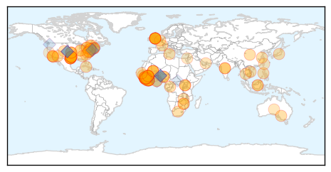
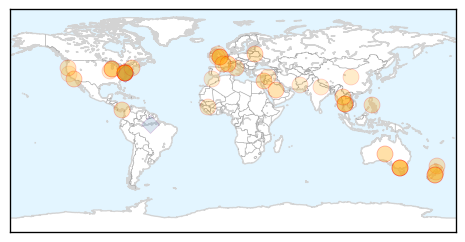
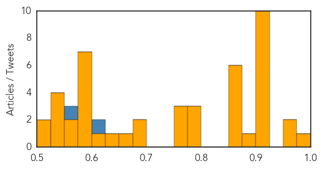

Ebola
30-Day Web Trend
0 alerts, 0 warnings

30-Day Twitter Trend
0 alerts, 0 warnings

Article Locations
Article Confidences

Top Articles:
- 1.000
- Ebola: Have we turned the corner?
- 1.000
- In Ebola outbreak, bad data adds another problem
- 1.000
- U.S. Ebola survivor reveals identity, says he's grateful
- 1.000
- Senegal to establish treatment centers for Ebola patients
- 1.000
- U.S. Ebola survivor reveals identity, says he's grateful
- 1.000
- Sierra Leone seeing 80-100 new Ebola cases daily
- 1.000
- Cuban doctor cured of Ebola vows to return to Africa
- 1.000
- A Very Simple Treatment For Ebola That Not Enough People Are Talking About
- 0.999
- US Ebola survivor can't remember 3 weeks
- 0.999
- Ebola claims 10th Sierra Leonean doctor
- 0.999
- With Ian Crozier's reveal, here are the 10 Ebola patients treated in U.S.
- 0.999
- Doctor cured of Ebola vows to return to Africa
- 0.999
- Cuban Ebola patient recovers after treatment in Geneva
- 0.999
- With Ian Crozier’s reveal, here are the 10 Ebola patients treated in U.S.
- 0.998
- A tenth Sierra Leonean doctor dies from Ebola
- 0.998
- Cuban ‘Ebola’ doctor vowing return to Africa
- 0.998
- Ebola: An Eyewitness Account from Sierra Leone, Dec. 7
- 0.998
- Survivors Help Improve Ebola Care
- 0.998
- EU Ebola response: medium/long term support through development cooperation
- 0.998
- UPDATE 1-WHO says Liberia wrongly added 1,000 deaths to Ebola toll
- 0.997
- SA healthcare workers join Ebola fight
- 0.997
- Doctor under recovery from Ebola reveals his identity
- 0.997
- Ebola Outbreak: 10th Sierra Leonean doctor dies
- 0.997
- Sierra Leone overtakes Liberia in number of Ebola cases -WHO
- 0.996
- Ebola: South African doctors, nurses called to fight virus in Sierra Leone
- 0.995
- Opportunity to improve health in West Africa
- 0.995
- Strike over inadequate Ebola equipment
- 0.995
- Doctors strike at main hospital in Ebola-hit Sierra Leone
- 0.995
- Sierra Leone to jail entire families in Ebola crackdown
- 0.994
- King County Man Who Developed ‘Probable’ Ebola Symptoms Tests Negative, Sent Home By Health Officials
- 0.994
- World Must Do 'Whatever It Takes' To Ensure Recovery Of Ebola-Affected Countries
- 0.993
- EU Commissioner announces new support for fighting Ebola during visit to Guinea
- 0.993
- 'I Will Finish What I Started' Cuban Doctor Cured Of Ebola Says
- 0.992
- Ebola survivor breaks his silence - World News
- 0.992
- Sierra Leone doctors strike for better Ebola care
- 0.992
- President Koroma Ponders Reasons for Ebola Calamity
- 0.991
- Webster Woman Home From Liberia After Helping with Ebola
- 0.989
- US doctor gives first interview since surviving Ebola
- 0.988
- US doctor gives first interview since surviving Ebola – BorneoPost Online
- 0.988
- Can I Be Detained For Being Ill?
- 0.987
- Zim-born Ebola survivor breaks silence
- 0.987
- Taiwan charges man who caused national disruption with Ebola lie
- 0.987
- Taiwan charges man who caused national disruption with Ebola lie
- 0.987
- Taiwan charges man who caused national disruption with Ebola lie
- 0.986
- Dallas ER doctor of Ebola victim missed his high fever
- 0.986
- Dallas Ebola patient's doctor admits missing symptoms in initial ER visit
- 0.986
- U.N. peacekeepers released from Ebola quarantine in Mali
- 0.985
- Webster Woman Under Voluntary Quarantine After Returning From
- 0.984
- North Carolina Uniquely Positioned In Ebola Fight
- 0.984
- Ghana: Text ‘Stop Ebola’ to short code 7979
Showing top 50 articles...
Top Tweets:
- 0.948
- RT: latest update by: 17800 Ebola cases in West Africa so far, 7798 in SL, 2283 in Guinea(both as of 6 Dec), 7719 in Liberia …
- 0.921
- . @kakape And now Sierra Leone had passed Liberia. Ebola
- 0.911
- RT: As Ebola Rages, Poor Planning Thwarts Efforts: http://t.co/MSatiEKMf0 SierraLeone ebolaoutbreak Ebola africastopebola
- 0.902
- WHO Ebola update, December 8: 17,145 cases, 6,070 deaths http://t.co/fEms8mmhon
- 0.898
- Text "STOP EBOLA" to *7979* to make your contribution towards Kicking Ebola out of Africa AfricaAgainstEbola dgtrends GOKinteracts
- 0.869
- RT: Health care worker who may have been exposed to Ebola in West Africa arrives at Atlanta hospital http://t.co/SAxTqcXZRW
- 0.852
- Ebola and politics in Liberia; 10th Sierra Leonean doctor dies; Ebola retreats in Kenema- today's Executive Summary http://t.co/FkoGzOaFjy
- 0.808
- Text "STOP EBOLA" to *7979* to make your make your contribution towards Kicking Ebola out of Africa AfricaAgainstEbola
- 0.808
- Text "STOP EBOLA" to *7979* to make your make your contribution towards Kicking Ebola out of Africa AfricaAgainstEbola @BBHotshots
- 0.744
- Spread the word, not the disease. Help share these Ebola facts from: http://t.co/nxorhK28bX EbolaResponse
- 0.732
- RT: Sierra Leone overtakes Liberia as country with highest number of Ebola cases, @WHO says http://t.co/bC6YMMjJxU http://t.co/0…
- 0.701
- Sierra Leone. My brush with Ebola http://t.co/wBUS6JnlTW
- 0.638
- Sierra Leone is seeing 80-100 new Ebola cases daily according to report http://t.co/YQn7NqchYm
- 0.582
- RT: Before March, Sierra Leone had 136 doctors. They've lost 7% of their doctors to Ebola. That's like 58,460 US doctors dying in 9…
- 0.582
- A Tenth Sierra Leonean Doctor Dies from Ebola http://t.co/lpsF8cVqCI
- 0.574
- RT: Good news vs Ebola: In Lofa, Liberia—hardest hit county this yr—0 cases in 30+ days. Combo of treatment/safe burials/s…
- 0.539
- RT: Ebolaresponse: see how & Intl Org for Migration (@IMO_News) helped a young Ebola survivor resettle in Liberia …
- 0.532
- RT: Welcome to Flublogia, African Platypus! http://t.co/WQhA4U98Rn Ebola
- 0.526
- RT: Ebola Infections Fewer Than Predicted by Disease Models http://t.co/9cKnhww4dM science
- 0.522
- You'll find a different angle on the lives of Ebola healthcare workers in Sierra Leone in this blog. http://t.co/n56AVlWkYv
- 0.510
- The fine line between health and safety, and saving lives during an Ebola outbreak: Kerry Town treatment center http://t.co/lJeYVGKOK0
Unknown
30-Day Web Trend
2 alerts, 0 warnings

30-Day Twitter Trend
2 alerts, 0 warnings

Article Locations
Article Confidences
Top Articles:
- 0.978
- Health officials looking out against chickenpox; outbreaks likely during cold season
- 0.974
- Flu Symptoms Already Showing Up, Get Vaccinated Now
- 0.957
- Norovirus 'pukefest' on the Dawn Princess
- 0.917
- Chicago Tribune
- 0.917
- Chicago Tribune
- 0.917
- Chicago Tribune
- 0.917
- Chicago Tribune
- 0.917
- Chicago Tribune
- 0.917
- Chicago Tribune
- 0.917
- Chicago Tribune
- 0.917
- Chicago Tribune
- 0.910
- The world windows to Thailand
- 0.910
- The world windows to Thailand
- 0.887
- Hundreds of cruise ship passengers ill and isolated
- 0.868
- You had chickenpox as a kid? Watch out for shingles
- 0.866
- Russia says committed to Ukraine ceasefire talks this week
- 0.866
- Russia says would accept money or warships to solve Mistral dispute
- 0.866
- Magnitude 6.6 quake hits off Panama coast, no damage reported
- 0.866
- Russia says expects "illegitimate" U.S. sanctions to stay in place
- 0.866
- Dawn Princess cruise ship passengers confined to cabins due to norovirus
- 0.795
- Otago Daily Times Online News : Otago, South Island, New Zealand & International News
- 0.789
- Norovirus Outbreak: Around 200 Passengers on Dawn Princess Sick
- 0.784
- DOH monitors health of people affected by typhoon ‘Ruby’
- 0.772
- Norovirus Sickens 200 People on New Zealand Cruise
- 0.762
- High Algae Levels In Jackson County
- 0.758
- Growing concern over untreatable sex super-bug
- 0.690
- For Minority Undergrads, Public Health Is Becoming a More Popular Major
- 0.689
- PHN: Incidence, Burden of Disease Reviewed
- 0.664
- Minister of Health and WHO Representative Launch Guinea Worm Disease Cash Reward and community directed treatment of Onchocerciasis - South Sudan
- 0.627
- Maldives / South Asia: Water Crisis Emergency Plan of Action (EPoA) DREF Operation n° MDRMV0002 - Maldives
- 0.615
- Maternal death rates 'are falling'
- 0.595
- Free flu shots to be offered at City Hall, 15th Ward Office during Vaccine Illinois Week
- 0.589
- Flu season’s start hits schools in the Kansas City area hard
- 0.579
- Paris electric car infrastructure to go nationwide
- 0.579
- New Delhi bans Uber after rape allegations
- 0.579
- Mother sues France over jihadist son’s trip to Syria
- 0.579
- Moroccan version of Wikileaks sows confusion – and doubts
- 0.579
- Creator of Paris 'slavery' exhibition says show must go on
- 0.573
- Norovirus sickens 200 people on New Zealand cruise
- 0.560
- 3500 patients treated at PN free medical camp
- 0.542
- Cruise passengers kept in cabins to avoid 'pukefest'
- 0.538
- Half of deaths in pregnancy are 'avoidable'
- 0.534
- Flu outbreak closes Nazareth Academy in LaGrange Park
- 0.531
- IMBRUVICA® (ibrutinib) Shows Sustained Progression-Free Survival in Patients with High-Risk Chronic Lymphocytic Leukemia with Genetic Mutation
- 0.506
- Punjab bans health camps without permission
- 0.501
- Norovirus sickens 200 people on New Zealand cruise
Top Tweets:
- 0.611
- RT: @AmazonMalaria Coronel de EEUU aconsejó que países de Asia deberían colaborar con FFAA en elaboración de estrategias contra …
- 0.574
- RT: Want to stay healthy this winter? Get your flu vaccine & avoid getting the flu this year! NIVW2014 HHSRegion7